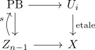
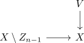

nisnevich topology is generated by nisnevich squares
Proposition
Let $S$ be a qcqs scheme and $\mathcal{F}$ a presheaf on $\mathrm{Sch}_{S}^{\mathrm{qcqs}}, \mathrm{Sm}_{S}^{\mathrm{qcqs} = \mathrm{Sm}_{S}^{\mathrm{fp}}$, $\mathrm{Et}_{S}^{\mathrm{qcqs}} = \mathrm{Et}_{S}^{\mathrm{fp}}$. Then the grothendieck topology generated by nisnevich squares is the
Proof
Let $\tau$ be the topology on $\mathrm{Sch}^{\mathrm{qcqs}}$ generated by nisnevich squares Then $(U_i \rightarrow X)$ be a nisnevich cover, then we need to show that the sieve generated by $U_i$ is a $\tau$ covering.
w.l.o.g. we may assume that $(U_i \rightarrow X)$ is a finite nisnevich cover (cf. nisnevich cover of a qcqs scheme), as there generated sieve by this cover is smaller than the one generated by all $(U_i \rightarrow X)$.
We apply the lemma to $\coprod_{i} U_i \rightarrow X$ to get a fp splitting sequence $\emptyset = Z_n \subseteq Z_{n-1} \subseteq ... \subseteq Z_0 = X$. By indcution on $n$ we have for $n = 0$ that $X = \emptyset$, where (todo).
Now for

where $s$ is a section of an etale map, hence an open immersion (cf. section of an etale map is an open immersion).
Now Let $W$ be the closed complement of $Z_{n-1}$ in $\mathrm{PB}$. Let $V = (\bigcoprod_{i \in I} U_i) \setminus W \hookrightarrow V$.
then $V \rightarrow X$ is an etale neighbourhood of $Z_{n-1}$.
Hence

is a nisnevich square, which generates a $\tau$ covering sieve on $X$.
Then $(\coprod U_i \rightarrow X)_{\vert X \setminus Z_{n-1}}$ has a splitting sequence $\emptyset = Z_{n-1} \setminus Z_{n-1} \subseteq ... \subseteq X \setminus Z_{n-1}$ of length $n-1$.
therefore by induction hypothesis $R_{\vert X \setminus Z_{n-1}}$ is a $\tau$ covering sieve.
Moreover, $R_{\vert V}$ is $\tau$ covering, since it is a sieve generated by a finite $\coprod$ decomposition.
Hence by Axiom 3) of a grothendieck topology, $R$ is a $\tau$ covering.